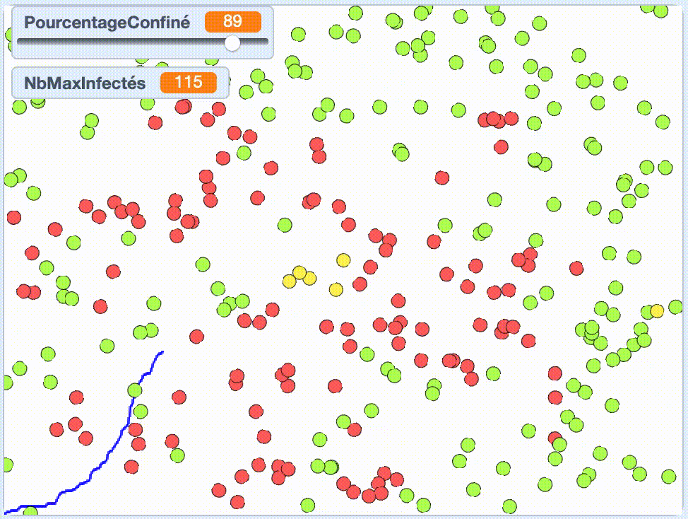

Simulateur en Scratch
Quel est l'impact de nos actions sur la propagation d'un virus. Que se passerait-il si la moitié d'entre nous respections le confinement ? Que se passerait-il si chacun faisait plus attention aux normes d'hygiène ? Il nous est facile d'estimer la tendance de ces actions, par exemple de prédire que la propagation du virus sera plus rapide si nous respectons moins les normes d'hygiène, mais il nous est beaucoup plus difficile d'aller plus loin dans cette prédiction pour aller vers du quantitatif par exemple et répondre à la question "Qu'est-ce qui se passerait si ... ?.
Pour prendre les bonnes décisions et minimiser les risques pris, des outils de prédiction sont donc nécessaires. Alors comment faire ces prédicitons ? On va pouvoir utiliser la puissance de calcul des ordinateurs qui nous permettront de programmer des simulateurs. Les simulations sont utiles dans le contexte de l'étude d'une épidémie comme celle qui nous touche aujourd'hui, mais elles sont aussi utiles dans d'autres domaines tels que:
- L'éducation, par exemple pour former des pilotes d'avion,
- La construction de batiments, par exemple pour tester l'ergonomie d'un nouveau projet,
- La mécanique, pour tester par exemple l'aérodynamie de nos pièces,
et bien d'autre: météo, astronomie, économie, robotique, sport...
Dans ce projet je vous propose de découvrir les éléments fondamentaux de ces simulateurs, tout en pratiquant vos compétences informatiques. Nous verrons entre autres que la capacité d'abstraction est primordiale à la création d'un simulateur. Ce projet permet également de travailler le concept de variables privées et globales.
Pré-requis
Pour suivre cette activité, il vous sera nécessaire de connaître les bases de la programmation en scratch. Vous devrez ainsi avoir déjà programmé dans ce langage et être familié avec les concepts d'instruction, de condition, de boucle, de variable et de fonction.
Choix de modélisation
Pour commencer, nous allons devoir répondre à la question: "Que dois-je simuler ?" que nous pourrions aussi exprimer comme "Que dois-je modéliser?". Commençons simplement et donnons-nous l'objectif de tester l'impact que le confinement a sur la propagation du virus.
Question
Avec pour objectif de simuler l'effet du déplacement des individus sur une pandémie, quels sont les éléments/entités qui devront faire partie de ma simulation ? Prenez un moment pour réfléchir à cette question avant de passer au paragraphe suivant.
Deux éléments sont fondamentaux dans notre contexte: il faudra bien sur que notre simulateur représente des humains, et pour représenter l'effet du déplacement, il va falloir que ces humains se déplace dans un environnement.
Question
Quelles propriétés les humains et l'environnement devront avoir dans la simulation ? Encore une fois prenez un moment pour essayer de répondre à cette question avant de continuer.
Ici, ce qu'il est important de comprendre, c'est qu'il va falloir choisir ce qui nous semble nécessaire, de ce qui ne l'est pas. Nous est-il nécessaire par exemple de savoir si tel individu porte un Tshirt vert ou une robe jaune ? A priori non, le virus ne semble pas s'intéresser à la mode. Modéliser cette information nous demanderait de faire des efforts inutiles, nous allons donc faire abstraction de cette information.
Definition 1: Abstraction
L'abstraction est un processus qui permet de représenter des objets réels en objets informatiques simplifiés. Elle consiste donc à séléctionner les caractéristiques pertinentes et nécessaires des objets de celles qui ne le sont pas.
Pouvons-nous nous passer de représenter la position d'une personne dans l'environnement ? Non, cette information doit nécessairement être prise en compte pour tester l'influence du confinement et donc du déplacement de nos individus. Par ces deux exemples de question je vous espère convaincus de l'importance de l'abstraction pour réaliser un simulateur performant.
Moi voilà, ça va plus loin, mon objectif à moi n'est pas de réaliser un simulateur pour influencer des décisions politiques, je laisse cette tâche aux épidémiologistes. Mon objectif à moi est de réaliser un simulateur pour enseigner l'informatique tout en ayant une introduction à ce qui peut se faire en épidémiologie. Pour cela je dois faire abstraction de plus d'information qu'un épidémiologiste le ferait. Je limiterais donc les informations modélisées à cela:
- un humain a une position, il a un état de santé (en bonne santé, infecté, guéri), il a deux comportements possible (confiné ou pas).
- l'environnement est un espace fini à deux dimensions (pas d'obstacles, de décors ou quoi que ce soit d'autre).
Comme Scratch vient par défaut avec un environnement qui est un espace fini à deux dimensions, il n'y a rien a faire à ce sujet. Donc passons directement à la modélisation d'un individu dans cet environnement.
Modéliser un individu

Figure 1: Un individu se déplace dans un environnement 3D fini.
Comme le virus n'en a que faire de l'apparence des individus, nous non plus. Alors commençons par créer un individu que nous représentons sous forme d'une balle. Créez donc un nouveau projet, enlever le sprite par défaut, ajouter un nouveau sprite défini par un simple cercle vert et renommer le "Humain".
Exercice 1
Programmez l'humain pour qu'il se déplace de manière aléatoire dans l'espace pour toujours quand on clique sur le drapeau. Attention: on ne veut pas que l'humain se retrouve coincé sur les bords...
Exercice 2
Ajouter une variable propre à l'humain qui définit si il est confiné ou pas. Faites varier son comportement en fonction de cette variable. S'il est confiné il ne bouge pas, s'il l'est il se déplace aléatoirement. Attention : quand vous créez une nouvelle variable, vous avez le choix de la partager ou non avec les autres sprites. Plus tard, dans notre cas, nous souhaiterons avoir certains humains confinés, d'autres non. On voit donc que notre variable décrivant cette caractéristique ne doit pas être partagée !
Solution exercice 1 et 2
 La solution proposée ici n'est qu'une proposition. Comme souvent en informatique il y a bien des solutions aussi valables les unes que les autres. Je vous laisse juger la validité de la votre.
La solution proposée ici n'est qu'une proposition. Comme souvent en informatique il y a bien des solutions aussi valables les unes que les autres. Je vous laisse juger la validité de la votre.
Exercice 3
Ajouter une variable à l'humain pour indiquer s'il est sain, infecté ou guéri. Ajouter une fonction pour l'infecter. Puis ajouter une variable qui permet de savoir à combien de jours de la guérison il est et une fonction qui sera appelée à chaque instant de la boucle principale pour vérifier son état de santé et le mettre à jour. Chaque fois que cette fonction est appelée, si la personne est contaminée, le nombre de jours diminue de 1. Si ce nombre arrive à 0 alors la personne est guérie. Faites varier l'apparence du sprite en fonction de son état de santé.
Solution exercice 3
 Remarquez ici que pour faire varier l'apparence du sprite, j'ai choisi de choisir l'instruction "basculer de costume" plutôt "mettre l'effet ...". Sans pouvoir vous en dire plus, je vous conseille d'en faire autant pour faciliter le travail à venir.
Remarquez ici que pour faire varier l'apparence du sprite, j'ai choisi de choisir l'instruction "basculer de costume" plutôt "mettre l'effet ...". Sans pouvoir vous en dire plus, je vous conseille d'en faire autant pour faciliter le travail à venir.
Peupler l'environnement

Figure 2: Une multitude d'individus se déplace dans un environnement 3D fini.
Pour l'instant nous avons modélisé un individu. Notre objectif va être maintenant d'avoir un grand nombre d'individu pour modéliser notre société. Nous utiliserons pour cela l'instruction "créer un clone de moi-même" et l'évenement "quand je commence comme un clone" qui vous permettrons de faire une copie de votre individu et de ses propriétés.
Exercice 4
Tester ces deux nouvelles briques et utilisez-les pour peupler votre monde virtuel de 300 individus.
Solution exercice 4
 Remarquez ici que j'ai utiliser l'instruction "cacher" puis "montrer". C'est une petite astuce en Scratch pour permettre aux clones d'être créé plus rapidement.
Remarquez ici que j'ai utiliser l'instruction "cacher" puis "montrer". C'est une petite astuce en Scratch pour permettre aux clones d'être créé plus rapidement.
Modéliser l'infection

Figure 3: Une épidémie se propage dans une population.
Vous voilà presque prêts à voir faire apparaître le virus dans votre simulation. C'est ici qu'il sera primordial d'avoir créé les variables que nous avons utilisés jusqu'ici pour qu'elles soient propre au sprite (on parlera ici de variable privée en opposition avec les variables globales qui sont partagées par tous les sprites et que nous utiliserons plus tard). En effet il va falloir transmettre le virus à un individu. Seul l'état de santé de cet individu devra être affecté à ce moment. On voit donc qu'il est nécessaire que chaque individu ait sa propre caractéristique "Etat de santé".
Exercice 5
Modifier votre programme afin que le premier sprite créé soit infecté au lancement du programme. Puis modifier le programme pour que si un individu en bonne santé entre en contact avec un individu infecté, il attrape le virus. Pour cela utiliser le bloc capteur "Couleur ... touchée ?". C'est ici que vous comprendrez pourquoi nous avons préféré "basculer le costume" du sprite. En effet cela vous permet de peindre le costume correspondant au sprite infecté avec une couleur bien précise et d'utiliser cette couleur comme condition dans "Couleur ... touchée ?".
Solution exercice 5
 Ici je ne présente que les groupes de blocs qui ont été modifiés.
Ici je ne présente que les groupes de blocs qui ont été modifiés.
Modéliser le confinement
Joli travail ! Mais voilà, pour l'instant, nous n'avons pas beaucoup de contrôle sur ce qui se passe. Et pour répondre à notre question de "Qu'est ce qui se passerait si...", il nous manque quelque chose.
Si vous vous souvenez bien, quelques paragraphes plus haut, nous parlions de confinement. Nous avons même une caractéristique de chacun de nos individus qui permet de l'immobiliser si cette caractéristique de confinement est définie comme vrai (ou "oui" dans notre programme pour être exact). L'objectif est maintenant d'utiliser cette caractéristique pour répondre à notre question: "Que se passerait-il si n% de la population était confinée". Représentons ce n par une variable.
Question
Est-ce que n doit être privée ou globale (une valeur indépendante pour chaque individu ou une valeur partagée par tous) ?
Réponse
Cette variable doit être globale. Elle caractérise toute la population. Si 10% de la population est confinée, ce pourcentage est valable pour chaque individu.
Exercice 6
Créer une variable globale nommée PourcentageConfiné et à l'aide de la fonction "nombre aléatoire entre ... et ..." changer votre programme pour que PourcentageConfiné % de la population reste confiné (immobile).
Solution exercice 6
 Créer la fonction DéfiniConfinemenet et appelez là dans les fonction. Si vous avez un problème pour comprendre ce programme, imaginez que vous ayez un énorme dé à 100 faces. "nombre aléatoire entre 1 et 100" vous donne le résultat d'un tel dé. Maintenant imaginez que PourcentageConfiné est égal à 20. Je voudrais avoir 20 chances sur 100 que ma variable confiné soit définie comme "oui" et c'est bien cec qui se passe si je le fait pour toutes les valeurs de dé inférieures à 20.
Créer la fonction DéfiniConfinemenet et appelez là dans les fonction. Si vous avez un problème pour comprendre ce programme, imaginez que vous ayez un énorme dé à 100 faces. "nombre aléatoire entre 1 et 100" vous donne le résultat d'un tel dé. Maintenant imaginez que PourcentageConfiné est égal à 20. Je voudrais avoir 20 chances sur 100 que ma variable confiné soit définie comme "oui" et c'est bien cec qui se passe si je le fait pour toutes les valeurs de dé inférieures à 20.
Définissez le pourcentage à différentes valeurs et regardez la propagation du virus. Remarquez que vous pouvez choisir quelles variables sont affichées sur votre environnement en cochant ou non la boîte à gauche de vos variables dans l'onglet code>Variables. Puisque seul le pourcentage est globale, seule cette variable devrait être affichée. En faisant un clic droit sur cette variable dans l'environnement vous pouvez aussi séléctionner l'option "Barre de défilement" ainsi que "change slider range" qui vous permettront d'intéragir facilement avec votre simulateur sans avoir à changer votre programme (le visuel auquel vous devriez pouvoir arriver est visible dans la solution de l'exercice précédent).
Quantifier la propagation

Figure 4: Courbe d'évolution du nombre de personnes infectées.
Peut-être pouvez-vous déjà voir les différences apportées par le confinement. Elle est flagrande si nous changeons le pourcentage de confinement de 0 à 100%. Qu'en est-il du changement lorsque l'on passe de 25 à 75% ? Ce que je vous propose est d'avoir un aperçu quantitatif de ce qui se passe dans notre simulateur. Pour cela, nous allons faire un programme qui dessine une courbe représentant le nombre de personnes infectées en fonction du temps. Mais d'abord, essayons simplement de dessiner une courbe quelconque.
Exercice 7
Créer un nouveau sprite sans rien dans son costume et ajouter l'extension "stylo" au bloc de code (pour ajouter une extension, cliquer sur la petite icône tout en bas à gauche avec un petit +). Cette extension est idéale pour dessiner une courbe. En effet, quand on met le "stylo en position d'écriture", alors lorsque l'on fait bouger le sprite, il laisse une marque de stylo derrière lui. Quand on "releve le stylo" il n'écrit plus. A l'aide de ces nouvelles instructions, dessinez votre fonction trigonométrique préférée, si vous en avez une.
Solution exercice 7
 Remarquez que pour dessiner en paix pendant un moment, j'ai enlevé le bloc "quand drapeau est cliqué" de mon sprite de départ. Ca me permet de voir ma courbe sans une foule qui grouille devant et de debugger mon code avec plus de clareté.
Remarquez que pour dessiner en paix pendant un moment, j'ai enlevé le bloc "quand drapeau est cliqué" de mon sprite de départ. Ca me permet de voir ma courbe sans une foule qui grouille devant et de debugger mon code avec plus de clareté.
Exercice 8
Maintenant que vous vous êtes familiarisés avec les blocs "stylo", utilisez les pour dessiner la courbe qui représente le nombre de personnes infectées en fonction du temps. Indice: créer un variable globale NbMalade qui sera mise à jour dans le programme des humains.
Solution exercice 8
 Pour résoudre ce problème, j'ai créé une variable globale NbMalade initialisée à zéro quand mon programme démarre et mise à jour à chaque fois qu'une personne est infectée (+1) et qu'une personne est guérie (-1). A chaque nouveau jour je peux donc déplacer mon sprite stylo en fonction de cette variable. Le "-180" ici est simplement un décalage qui me permet de dessiner le 0 en bas de l'environnement.
Pour résoudre ce problème, j'ai créé une variable globale NbMalade initialisée à zéro quand mon programme démarre et mise à jour à chaque fois qu'une personne est infectée (+1) et qu'une personne est guérie (-1). A chaque nouveau jour je peux donc déplacer mon sprite stylo en fonction de cette variable. Le "-180" ici est simplement un décalage qui me permet de dessiner le 0 en bas de l'environnement.
Conclusion
Félicitation si vous êtes arrivez jusque là vous pouvez maintenant voir la courbe qui représente le nombre de personnes malade en fonction du temps. Cette courbe ressemble normalement à une sorte de cloche.
Comme vous l'imaginez peut-être, il est possible d'aller plus loin dans notre modélisation ou dans notre retour quantitatif:
- Vous pourriez afficher le nombre maximal de personne malade atteint au cours d'un simulation. Ce nombre est très important car c'est celui-ci qu'il faut comparer à la capacité maximale de traitement de notre système de santé. Ainsi il est primordial pour nos politiques de prendre des décisions qui vont applatir notre cloche et réduire ce nombre, afin que le système de santé ne soit pas saturé et que tout le monde puisse être traité dans de bonnes conditions.
- Vous pourriez modéliser l'impact d'un facteur tel que les normes d'hygiènes comme je l'évoquais en introduction. On pourrait par exemple représenter ces normes par une différente zone d'influence de nos individus.
- Enfin pour aller beaucoup plus loin je vous conseille de regarder la vidéo de 3Blue1Brown sur le sujet.
- Pour aller plus loin aussi dans la réflexion sur les chiffres que l'on lit dans la presse, je vous invite également à lire cet article de Tomas Pueyo que j'ai trouvé très intéressant.
Enfin merci à Mitch Resnick pour avoir déjà fait une partie du travail en programmant un simulateur en Scratch sur lequel je me suis fortement inspiré.